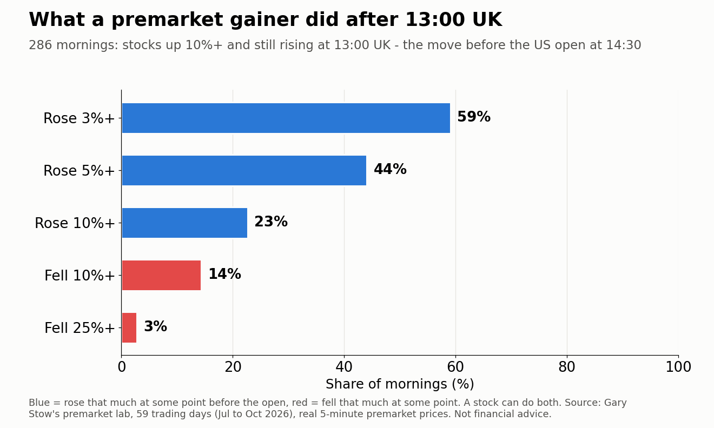
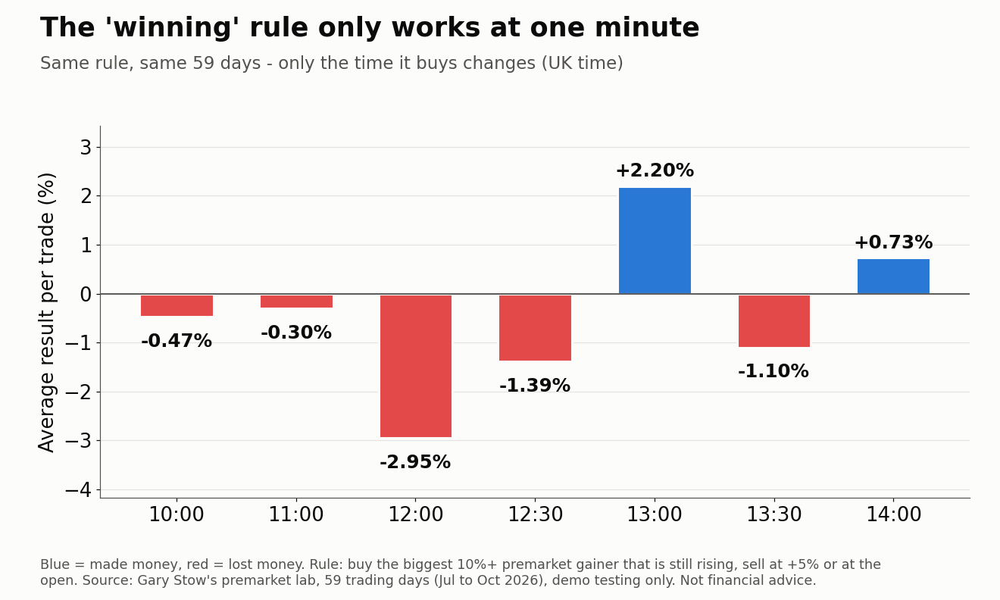
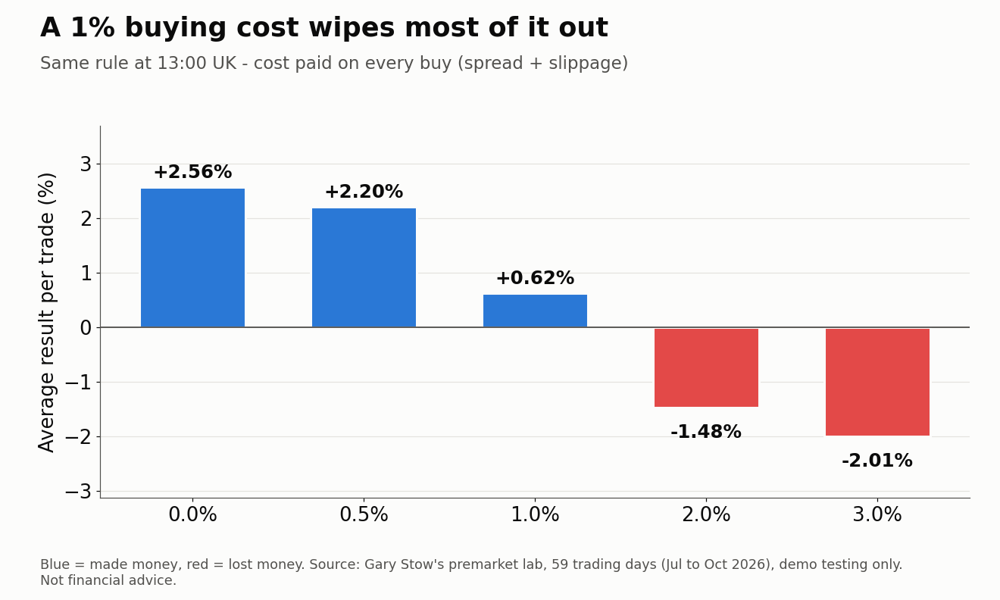
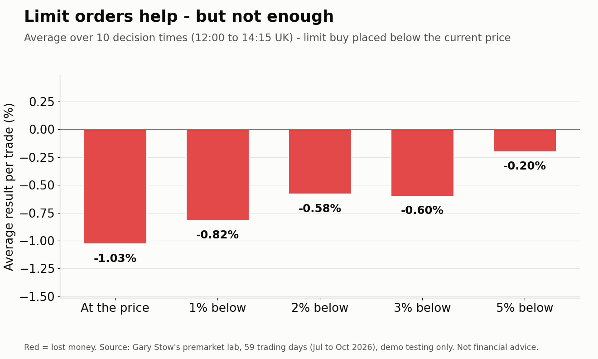

When I had time at my desk in the early afternoon, I had a simple premarket routine. I looked at the biggest gainers before the US market opened, checked whether the chart was still climbing or starting to cool, and if the candles said the momentum was picking up, I jumped in to scalp around 10% and get out before the open. I usually missed the vertical spike, and that was fine, because that was never my play.
I don't have that time any more, so I want an automated version to do it for me. It runs on a demo account with a £50 pot, so nothing here is real money and none of it is financial advice. Before letting it trade, I wanted one question answered: would a set of written-down rules have made money?
Step 1: Build the data once, then test ideas in seconds
My first attempt replayed every past day through my real trading code. It worked, but one run took 44 minutes, so testing a handful of ideas cost a whole evening. The fix was to work out every stock's numbers for every morning once, save them in one table, and then test rules against that table.
The table holds 51,042 mornings: every stock that was up or down 3% or more before the open, on 59 trading days from 20 July to 9 October 2026, using real 5-minute premarket prices. With that in place, 6,444 versions of the strategy ran in under ten seconds.
# The core idea, simplified: build the table once, then test many rules against it
mornings = load_mornings() # one row per stock per morning, built once
results = {}
for rule in all_rules: # thousands of variations
trades = [rule.trade(m) for m in mornings if rule.picks(m)]
results[rule.name] = tradesStep 2: Look at what a typical premarket gainer actually does
Before testing any rule, I looked at the stocks themselves. I took every stock that was up 10% or more at 13:00 UK time and still rising over the previous 30 minutes, which gave 286 mornings. The median stock in that group was already up 17.1% on the day.

- 59.1% went on to rise at least 3% before the open, and 44.1% rose at least 5%.
- 22.7% rose 10% or more, the full target I used to aim for.
- 14.3% fell 10% or more at some point, and 2.8% fell 25% or more.
- The race between +5% and -5% was a coin toss: +5% came first 32.5% of the time and -5% came first 31.5% of the time. Neither happened in the other 36%.
That coin toss matters most. A gainer that is still rising was no more likely to keep going than to turn, so any edge has to come from picking better or paying less.
Step 3: Keep some days back before you look at the results
The most important rule in testing is to hold some data back. I used the first two thirds of the days, everything before 14 September, to find the best rules, and the last third to check them without changing anything.
Only 20.8% of the 6,444 versions made money on the days they had not seen. The 25 best versions from the first period did no better, with 20% of them making money on the unseen days. Picking winners from the past told me nothing about the future.
Step 4: Nudge the winner and see if it holds
One rule looked brilliant: buy the biggest gainer that is up 10% or more and still rising at 13:00 UK, then sell at +5% or at the open. It averaged +2.20% a trade. Then I changed the buying time and nothing else.

Half an hour earlier it lost 1.39% a trade, and half an hour later it lost 1.10%. A real edge looks like a plateau that still works, a little worse, when you nudge it. This looks like a spike, and when you test thousands of versions a few spikes appear by pure luck. I also thought I used to buy around 12:00, and in this data that was the worst time of all.
Step 5: Charge yourself a realistic cost
Every buy costs something: the gap between the buying and selling price (the spread), plus any slip between the price you see and the price you get. Premarket, on a small company that has already jumped a long way, that cost can be large. I don't know mine yet, so I tested a range.

At 1% per buy most of the profit is gone, and at 2% it loses money. The whole strategy depends on a number I had never measured.
Step 6: Don't trust a shortcut in the data
Before I had real premarket prices, I tested February to early June using the opening price instead. That data said my -5% stop loss was the problem: for one of my score-based rules, removing the stop lifted the average from +0.58% to +1.63% a trade over 111 trades.
When I re-ran that same rule with real premarket prices for August to October, it said the opposite. Part of the gap is a different set of months, but either way the shortcut pointed me the wrong way. With the -5% stop the rule averaged -0.46% a trade over 41 trades, and with no stop it averaged -2.35%. If I had trusted the shortcut, I would have removed the one thing protecting the pot.
Step 7: Try the tool your broker already gives you
My broker lets you place a limit order, which only buys if the price drops to a level you choose. Instead of paying whatever the price is, you wait for a small dip. I tested 10,404 limit-order versions.

Limit orders helped at every level, and the deepest limit helped most. 29.5% of limit versions made money on unseen days, against 20.8% without. Averaged across buying times, though, even the best level still lost 0.20% a trade. Better, but not good enough.
What I'm doing instead of picking a winner
I have written down five rules and frozen them. Every weeknight my automation scores what each one would have done that day, on mornings it has never seen, so nothing can be tweaked to fit the past. After 20 trading days I will know far more than another week of backtesting could tell me.
A second new check records the price each order was meant to fill at and the price it actually got. That is the number the whole thing hangs on, and I will share both results when they are in.
You can download the numbers behind every chart in this article: premarket lab results (CSV).
Can you backtest a premarket strategy with free data?
Yes, within limits. Yahoo Finance keeps around 60 days of 5-minute bars including premarket, which is enough for a first look but not enough to trust. Free data has no record of buying and selling prices, so you cannot see the real cost of a trade, and you should test a range of costs as I did above.
Why do backtests lie?
Mostly because people test many ideas and keep the best one. With thousands of versions some will look great by chance. Holding days back for checking, nudging the winner to see if it holds, and charging a realistic cost are the three checks that caught it for me.
How many days of data do you need?
More than I have. 59 days and roughly 40 to 60 trades per rule is enough to rule ideas out, but not to prove one works. That is why the forward test matters more than any backtest.